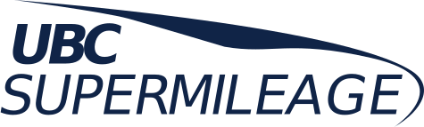

Technical Deep Dives
Autonomous Sphere
Sept 2024 – Present
Overview
I am currently developing a sphere that rolls using forces generated by custom electromagnets. The goal is to create a holonomic drive system that is completely enclosed, making it robust for harsh environments.
Key Challenges
- Power Electronics: Designing a chopper drive circuit to create a precise current control feedback loop.
- Control Theory: Developing algorithms to stabilize an inherently unstable system using magnetic manipulation.

 Custom Magnet Control PCB
Custom Magnet Control PCB
 Custom Motor Driver PCB
Custom Motor Driver PCB
 Magnet Housing CAD
Magnet Housing CAD
Autonomous Sorting Robot
Summer 2023
Overview
"UBC Summer" is a fully autonomous robot designed to navigate a tape track at high speed. It identifies magnetic "bombs" using Hall effect sensors and sorts "good" blocks into a storage container using a custom brush mechanism.
Engineering Features
- Steering: Custom Ackerman geometry steering system using laser-cut Delrin and 3D printed housings.
- Circuitry: Hand-soldered power distribution and opto-isolated motor controllers to reduce signal noise.
- Logic: STM32 "Blue Pill" microcontroller running C++ PID loops for line following.

 Final Robot Wiring
Final Robot Wiring
 Ackerman Steering Design
Ackerman Steering Design
 Custom Doors for Block Collection
Custom Doors for Block Collection
ML & Computer Vision
Fall 2023
Overview
I programmed a virtual robot in a ROS/Gazebo simulation to navigate "Mount Panorama." The robot used computer vision to track lanes and a Neural Network to read road signs and avoid NPCs.
Algorithms
- SIFT: Scale-Invariant Feature Transform to match objects (like Wall-E) in a live video feed.
- Sign Detection: Used HSV thresholding to isolate blue sign borders, then passed extracted text to a Neural Net.
- Control: PID feedback loop to keep the robot centered on winding roads.

 SIFT Object Detection
SIFT Object Detection
 HSV Thresholding Process
HSV Thresholding Process
 Lane Tracking Mask
Lane Tracking Mask
UBC Supermileage
Sept 2021 – May 2022
Overview
As part of the Powertrain Division, I designed the motor mount and universal base plate for the team's hydrogen fuel-cell vehicle. My focus was on weight reduction without compromising structural rigidity.
Key Achievements
- Weight Reduction: Achieved a 25% weight reduction using Topology Optimization studies in SolidWorks.
- Manufacturing: Fabricated parts using waterjet cutters and manually tapped holes for gearbox integration.

 Manual Fabrication
Manual Fabrication
 Motor Mount Design
Motor Mount Design
 Base Plate Optimization
Base Plate Optimization
D-Wave Autonomous Magnetic Screening
May 2024 – Dec 2024
Overview
Developed automated magnetic screening systems for quantum processors using Python and custom PCBs.
Results
- Designed custom PCBs for sensor integration with LabJack.
- Developed firmware for motor control based on pressure and light sensor inputs.
- Coded a real-time UI for actuator positioning and control.
- Operated cryogenic equipment for quantum processor testing.

 Custom GUI to Monitor Actuators, Sensors and Signals
Custom GUI to Monitor Actuators, Sensors and Signals
 Custom Control and Alert PCB
Custom Control and Alert PCB
 Sensor and Labjack Breakout Board
Sensor and Labjack Breakout Board